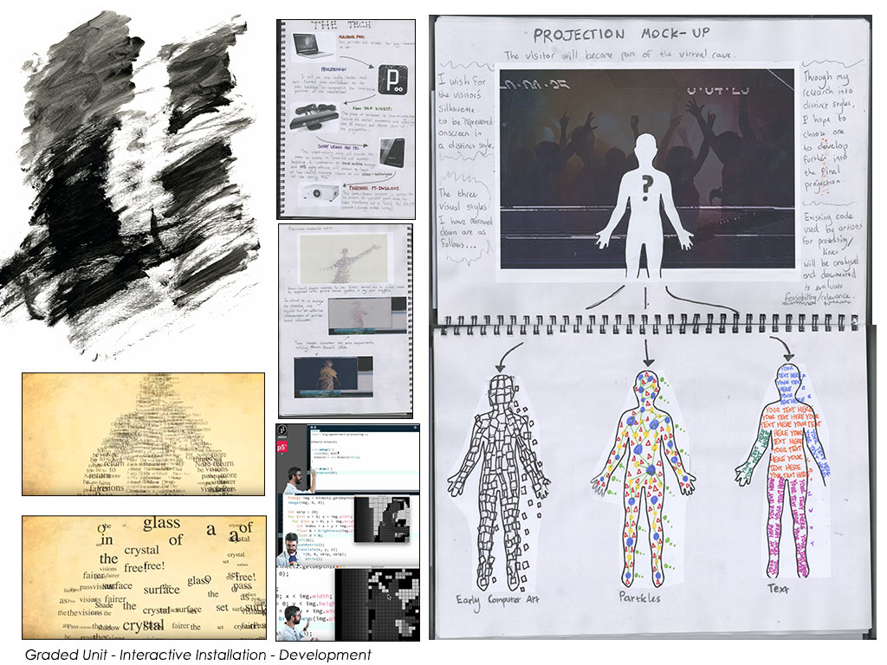

Music visualisers are fairly commonplace from standalone players (like the classic WinAmp) to YouTube videos. I wanted to create a music video for a drum n’ bass track that went a step further by separating each layer of the music (bass/drums/vocals). This allowed for more personal freedom and a unique visual motif for each instrument.
The visuals were generated as a series of experiments in Processing, which analyzed the amplitude and animated graphics accordingly. The aim was to make each visual distinct and characteristic of the sound (like a sonar graphic for bass). The waveform in particular is used to distinguish the analogue and organic nature of the human voice. I utilised these outputs and arranged them in After Effects, matching them with the original track alongside some complementary visuals (the sea backdrop) aligning with the theme of the track (Sea of Tears). The result is a music visualiser/music video hybrid!
‘Moving Information’ project: The brief was to create an animated infographic on a topic of our choice (with a focus on storytelling and creativity that presents complex information quickly and clearly).
I chose machine learning as it is continually becoming a part of our lives (especially in regards to social media). I felt it presented the opportunity to consider a daunting topic and condense it down to layman’s terms. After Effects was utilised generate visual effects such as the ‘dancing neural network’ and ‘binary head’.
This project stemmed from experimentation working with Kinect and Processing. I developed a Processing Sketch which converted the Kinect’s depth camera input to Processing’s String display capability, resulting in a silhouette scrolling through an array of words.
Inspired by early dance/electronic music and rave scenes, I developed an Unofficial music video for the Orbital track “Halycon” based around the theme of police brutality that has occurred during underground raves.
